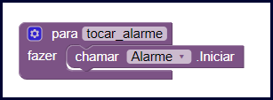
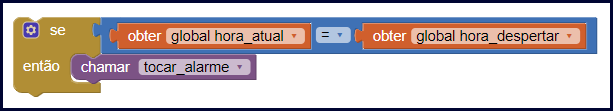
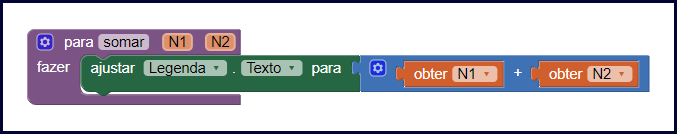
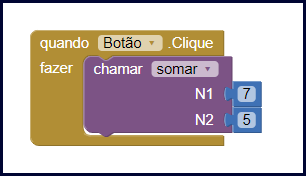
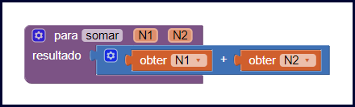
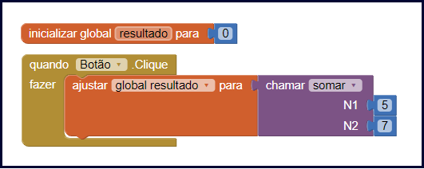

Nessa aula vamos aprender o que são os procedimentos e como podemos usá-los no desenvolvimento de nossos aplicativos para tornar nossos códigos mais organizados e intuitivos.
Seu quarto já ficou bagunçado? Com tudo fora do lugar? O meu fica desse jeito as vezes. Sabia que o código de nossos aplicativos também pode ficar bagunçado?
Quando desenvolvemos aplicativos com muitas funcionalidades o código pode começar a ficar muito bagunçado e difícil de ser entendido.
Utilizando os procedimentos podemos deixar nosso código mais organizado, vamos ver nessa aula como funcionam os procedimentos e como podemos utilizá-los em nossos aplicativos.
A função principal dos procedimentos é permitir que você possa organizar o código de seus programas de uma forma mais fácil. E também possibilita que você possa reutilizar determinados comandos em lugares diferentes de seu aplicativo.
Os procedimentos são essenciais quando se desenvolve um aplicativo com várias funcionalidades, como é o caso do desenvolvimento de um aplicativo para controle financeiro.
Neste exemplo, poderíamos tornar o código do aplicativo mais organizado criando os seguintes procedimentos: calcular saldo disponível, cadastrar nova despesa, deletar despesa, editar despesa, cadastrar contas a receber, deletar contas a receber, editar contas a receber. Ou seja, para cada funcionalidade criaríamos um procedimento.
Para deixar nosso código organizado devemos criar um procedimento para cada uma das funcionalidades de nosso aplicativo. Também é indicado usar procedimentos quando você elaborar uma sequência de código igual em lugares diferentes, no seu aplicativo, assim você consegue reutilizar o mesmo código em vários lugares sem ter que reescrevê-lo.
No exemplo do aplicativo de controle financeiro teríamos um procedimento chamado “calcular_saldo_disponivel”, esse procedimento tem a função de retornar o valor em dinheiro que o usuário possui. Calcular o saldo disponível é algo que usamos em vários lugares, como criamos um procedimento podemos apenas chamá-lo sempre que precisarmos, sem precisar reescrever todo o cálculo do saldo em vários lugares.
A principal dificuldade ao começar utilizar os procedimentos é identificar quando usá-los e quando não usá-los, por isso eles muitas vezes não são usados da forma devida.
A dica é, use os procedimentos sempre que um determinado trecho de comandos se repete no seu código.
Quando o algoritmo for muito extenso também é indicado dividi-lo em procedimentos separados, cada procedimento executando uma tarefa específica.
Nós temos disponível no App Inventor três tipos de procedimentos, o primeiro e mais comum nós vamos chamar de “procedimentos simples”, os procedimentos simples apenas executam uma determinada tarefa.
O segundo tipo é chamado de “procedimentos parametrizados”, são procedimentos que recebem informações por parâmetro e usam essas informações para fazer determinada tarefa.
E o terceiro tipo chamamos de “procedimentos com retorno”, são os procedimentos que retornam um resultado como resposta após executar determinada ação.
Vamos ver a seguir como usar cada um desses tipos de procedimentos com mais detalhes.
Um procedimento simples, apenas executa uma determinada tarefa quando é chamado, por exemplo, vamos criar um procedimento que toca um alarme, nesse caso, o procedimento não precisa retornar um resultado e nem precisa receber uma informação por parâmetro.
Para criar um procedimento simples você só precisa dar um nome a ele e implementar a tarefa que ele deve executar. Veja abaixo como podemos criar o procedimento que toca um alarme no App Inventor.

Ao lado da palavra “para” nós informamos o nome do procedimento, ao lado da palavra “fazer” nós programamos tudo que esse procedimento vai fazer, ele vai apenas tocar o alarme.
Para fazer uso de um procedimento simples basta chamá-lo, que ele irá executar a tarefa para a qual ele foi criado. Veja abaixo como fazemos a chamada de um procedimento.

O bloco “chamar” na cor roxa é o responsável por chamar o procedimento com o nome “tocar_alarme”.
Imagine que você vai criar um procedimento que imprime o resultado da soma entre dois números, nesse caso seu procedimento precisa saber quais números deve somar, para isso usamos os parâmetros.
Denominamos de parâmetros as informações que passamos para o procedimento no momento em que o chamamos.
Para criar um procedimento com parâmetros, é necessário dar um nome a ele e também informar quais dados ele vai receber por parâmetro quando for chamado. Veja abaixo como podemos criar o procedimento de soma que vai receber dois números por parâmetro.

Ao lado da palavra “para” nós colocamos o nome do procedimento, depois do nome indicamos o nome de cada parâmetro que ele espera.
Para usar esse procedimento basta chamá-lo e informar os dados que ele necessita por parâmetro.

Ao usar o bloco “chamar” para usar o procedimento “somar” foi necessário informar os dois número que o procedimento espera receber por parâmetro.
Esse tipo de procedimento após ser chamado executa sua tarefa e retorna um resultado. Em seguida, vamos criar um procedimento que calcula a soma entre dois números e retorna o resultado da soma.
Ao criar um procedimento com retorno você precisa indicar qual vai ser o tipo da informação que ele retornará, além disso ele deve ter um nome, você também pode informar os parâmetros que ele vai receber caso seja necessário. Veja abaixo como podemos criar este procedimento.

Nesse procedimento nós indicamos seu nome ao lado da palavra “para” e também solicitamos dois parâmetros que serão os números para fazer a soma. A diferença é que temos a palavra “resultado” onde indicamos que o resultado será a soma dos números.
Para usar um procedimento com retorno basta chamá-lo e informar os parâmetros caso você tenha criado ele solicitando parâmetros, além disso você precisa guardar a informação que o procedimento irá retornar em uma variável ou usá-la logo após chamar o procedimento.

Aqui nós usamos o bloco que chama o procedimento “somar” conectado à uma variável, assim o resultado da soma será guardado na variável “resultado”.
Nessa aula nós aprendemos como funcionam e como usar os procedimentos no App Inventor.
Aprendemos que com os procedimentos conseguimos deixar nosso código mais organizado, mais fácil de ser entendido e também conseguimos fazer a reutilização de códigos que seriam reescritos várias vezes em nossos aplicativos.
Caso você tenha ficado com dúvidas ou tenha alguma sugestão/pergunta envie uma mensagem para nós. Responderemos o mais rápido possível.
Até a próxima aula.
ALVES, Gustavo Furtado de Oliveira. O que são Funções e Procedimentos?. Dicas de programação, 2013. Disponível em: https://dicasdeprogramacao.com.br/o-que-sao-funcoes-e-procedimentos/. Acesso em: 29 de setembro de 2019.
REIS, Fabia. Lógica de Programação – Procedimentos. Bóson treinamentos em tecnologia, 2015. Disponível em: http://www.bosontreinamentos.com.br/logica-de-programacao/26-logica-de-programacao-procedimentos/. Acesso em: 29 de setembro de 2019.
GATTO, Elaine Cecília. Funções e Procedimentos. Embarcados, 2017. Disponível em: https://www.embarcados.com.br/funcoes-e-procedimentos-parte-1/. Acesso em: 29 de setembro de 2019.